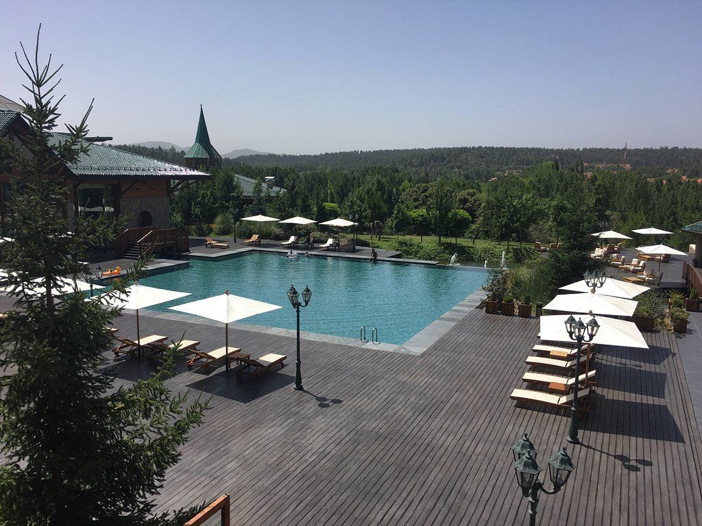
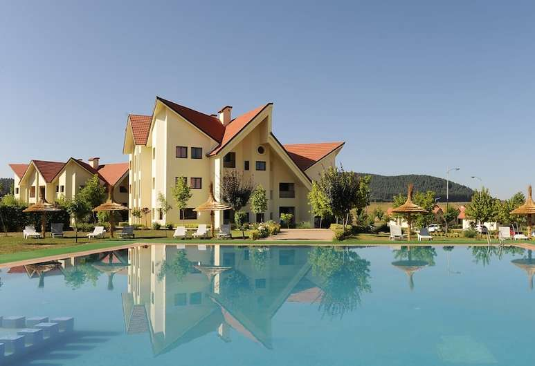

Ifrane est célèbre pour ses hôtels haut de gamme de différents niveaux, donc quelles que soient les possibilités de votre voyage, vous trouverez certainement votre bonheur parmi les hôtels marocains calmes d'Ifrane.
L'un des meilleurs hôtels 5 étoiles d'Ifrane pour ses chambres climatisées avec une vue magnifique sur les forêts ou la piscine.L'hôtel propose un club de santé qui propose des services de sauna, des massages et des soins de beauté, et au niveau des services, il propose Internet et un parking gratuit.L'hôtel est situé dans la rue Hassan II, à proximité du parc national, à 0,3 km de Hajar Lion, à 5,5 km de la ville marocaine d'Ifrane.